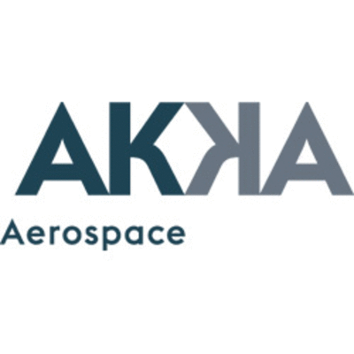

Quentin Castel
Software engineer
Technical lead
About Me
Thinker, Problem solver, creativity
I am a passionate/developer advocado!
Solving problems, innovating, using new tech are what drive me. I couldn't concive my job if it was lacking of challenges with no human interaction. I love been part of a developers community and helping people around.
I attach a particular importance for standards, as I believe their are the base of innovation and collaboration.
To promote the technology I worked on, I had the pleaser to present multiple meetups in different countries. I also keen on events like hackathon, as a participant or even in organising them!
- Age30
- ResidenceUnited-Kingdom
- NationalityFrench
- AddressBristol
- e-mailmail@quentin-castel.fr
- AvailabilityPermanent job with ForgeRock
Get in Touch
Plenty of reason to get in touch with me :) If you are looking for a speaker for your meetup or conference on a domain I know well. Could be also for discussion and share ideas.
I am always happy to be contacted by email, slack or even better, a coffee or pub!
Bristol, UK
Resume
6 Years of Experience, Master in Software engineering
Experiences
Aug 2014 - Current
ForgeRock
Identity software company.
Oct 2017 - Current
Technical Lead, Open Banking Reference Implementation
OBRIStarted the project by a POC, to proove Open Banking could be implemented using ForgeRock stack, now technical lead, providing Open Banking sandbox as a service
The team has grow significantly since and my role as move from Open Banking expert to project management/technical lead.
I am proud to say that we provide the most complete and modern Open Banking sandbox in the market. Just to give you a taste why it's on top of the art:
- Micro-services approach, fully stateless and scallable
- Deployed on K8 using helm charts
- Modern UIs, using Angular and material design
- CI/CD using codefresh, with auto-deployment based on master
- Using OIDC for managing the identity of all the applications (not just the ASPSP)
- Used by the majority of the TPPs
- Continuous security conformance, as we included the conformance box into our pipeline
- First hackathon on Open Banking, successfully hosted with not a single downtime
Very proud of what our team has achieved!
Jan 2016 - Oct 2017
Senior Sustaining engineer
OpenAM.My job was to sustain the OpenAM project. Over time, I did:
- Specialised in OAuth2/OIDC
- Working on making AM compliante for OIDC
- Realising multiple sustaining versions of AM
- Improving our release process
- Building internal tools (Intellij, Zendesk, Jira plugins)
- Working on security releases
Aug 2014 - Jan 2016
Support engineer
OpenAM.When I moved to england, I decided it was the occasion to improve my english and work on the customer facing. Support enginner was a great experience, I loved interacting with our customers and solving concrete operational issues. As a software engineer, I learned a lot from this experience on what makes a product good, sustainable and easy to support.
Jun 2014 - Aug 2014
 AKKA
Contractor, BristolWhen I was looking for a job in england, I was bored between interviews. I had this opportunity to take a short contract with AKKA, my wife company.
They needed someone to help understand their need and setting a solution for it. As I listened to my wife tell is day ;) and it was easy for me to understand how they could improve their process by simply having the right tool.
I put in place KP, a management system based on the open source Redmine. It was a success and it is still going! It is now used in the entire AKKA group, employing several engineers.
Nov 2013 - Apr 2014
GoodMorningPlanet
Startup, ToulouseSoftware engineer for a startup goodmorningplanet.com, a social networks dedicated for travelers. I’m in charge of the back-end algorithms for developing artificial intelligent in python with django, based on Postgres SQL with Postgis. I work on Graph algorithms and mathematical theory in order to improved user experience in our large database.
At the end, working for a startup remotely didn't work out for me. I first wanted to go abroad again but also, not meeting a team everyday didn't fit me at the time.
Dev 2012 - Nov 2013
Living Objects
Backend Software engineerI worked as a Java engineer for a small firm Living Object, specialized in Network performance analysis. The core, developed in Java, has to manage a huge data computation, with time constraints. My work was to design multi threading softwares, with optimized algorithms, and to be aware about software quality.
In a small firm like LivingObjects, software engineers have to be polyvalent. As for as I’m concerned, I was also in charge of Back-end responsibility, like : deployment in our client servers, leading some back-end modules, developing R&D intelligent with Phd Student, doing maintenance in different servers, helping recruit and training new back-end engineers and participate in hardware architecture.
Working for Living objects was a great experience, very intence. I would have honestly stay if they hired more people on the backend team to help me and if the project management was stronger.
Jun 2012 - Dev 2012
Airbus Defence and space
Software engineer internship, ToulouseI worked for the User Ground Segments departement, in a R&D internaltional project (UK - DE - FR). My job was to developer a spatial mutli-system data-model in Java and based on it, develop external tools features like 3D export with STK AGi, SQL api, XML exportation. A really passionate mission, which as a high success. It is now integrated in their user ground segment software for doing satellite mission planning.
I loved working for satellites! A great experience which was combining my knowledge of software engineer but also of physics, mathemaics and mecanics. It was a chance that I could link all those competences in one mission.
Jun 2011 - Aug 2011
IFREMER
Software engineer internship, BrestI think one of the mission that I preferred if not the one. I designed a bathymetry files analyzer in Java, based on NetCDF format with a IFREMER Standard. Which means I analysed data for cartographying the bottom of the ocean. They wanted a tool they could embedded in boats to analyse the data they were currently mapping. This tool is still currently use in IFREMER mission.
It turns up that I developed the tool in a month instead of 6, so they gave me another mission, also amazing:
They need to improve their 3D visualisation of those ocean map. Their problem was the performance of the rendering, which didn't allow a high resolution rendering without lagging. My mission was to do graphic optimisation, which consisted on moving some work done by the CPU to the GPU. This is where I learned to use OpenGL and the shaders. Also managed to finish my mission and this R&D has been integrated in their next software version.
Jul 2010 - Aug 2010
Generads
Beta-tester and PHP developer, BordeauxMy first internship, after my first year of software engineering school. I have been employed as a beta-tester and developer for Generads, a startup in advertising analysis with Adwords. It was a great opportunity for me, to start as a developer with so little software experience. I did a website and even wrote a little PHP framework, before frameworks like Synfony 2.0 become popular.
Coding Skills
Java
Spring
Angular
GIT
Certificates
Standards
OAuth2/OIDC
Open Banking
JOSE (JWT, JWS, JWE, JWK)
DevOps
Linux
Docker
K8
CI/CD
Education
2011-2012
Software engineer Degree, Grade A
My last year of my master, as a student exchange
I choose to diversify my profile and touch different branches of softare enginnering. This is what I loved at Polymtl! In particular, I really enjoyed following:
- PHD course in quality of software engineering.
- Mobile development, building a game for android. From scratch to the android store!
- Embedded system, as for example implementing the logic of a router on microsheep.
- Virtual reality programmation, on headset and multiplescreens projected on the room (really cool!).
- Distributed system, the efficiency of codes running in multi-core, different servers
2009-2011
Software engineer Degree, Grade A
Very proud to say that I graduated for ENSEIRB. Now that I got a few years in my career, I can really see the value and quality of my formation. This two years have been intence, and cover all the spectre of software enginnering. To give you some examples
- Algorithm, Graph theory
- Cryptography, at the mathematical level
- Advance networking concepts
- Quantum computing
- System programming
2007-2009
Mutli-licenses
Probably the most intence year of my education. To give you an idea:
- 1800 hours in 2 years
-
You follow the major subjects of
- Mathematics
- Physics and chemistry
- Mecanics
- Computer sciences
At the end, you got a degree in the 4 above specialities